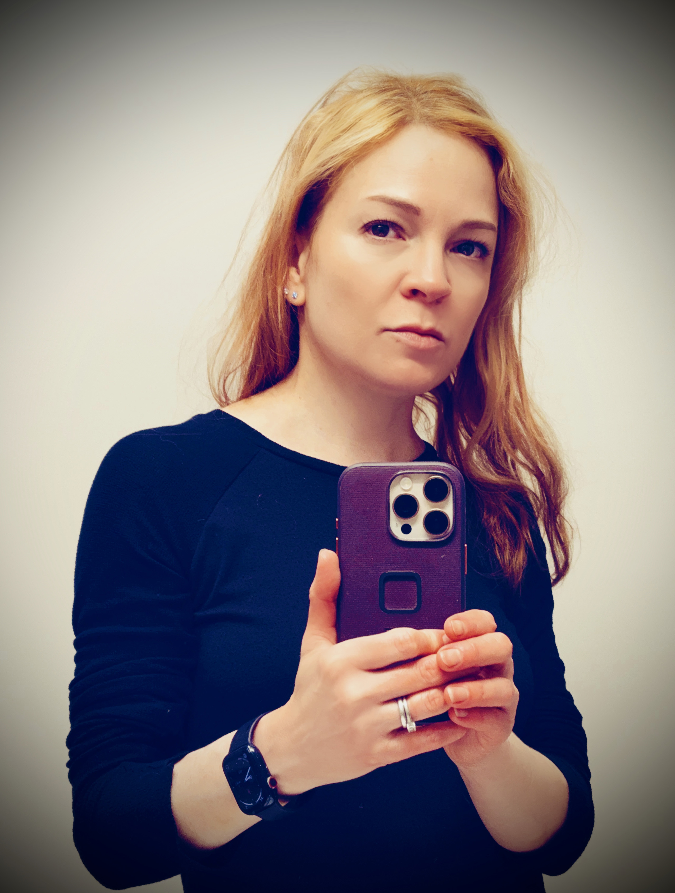
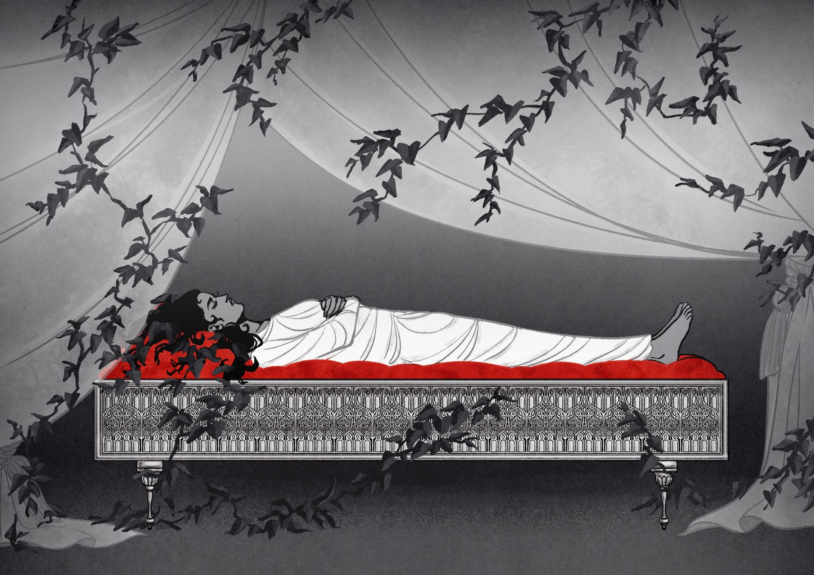
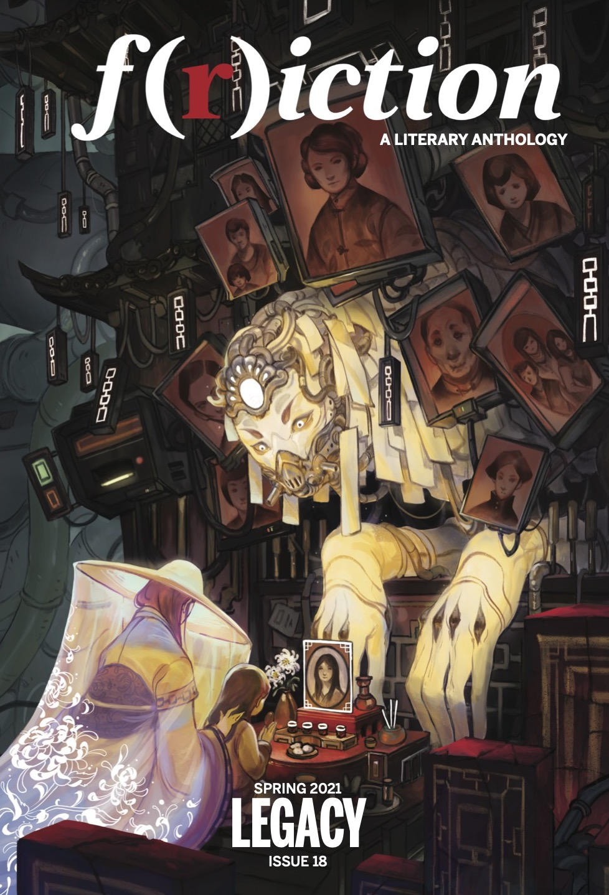
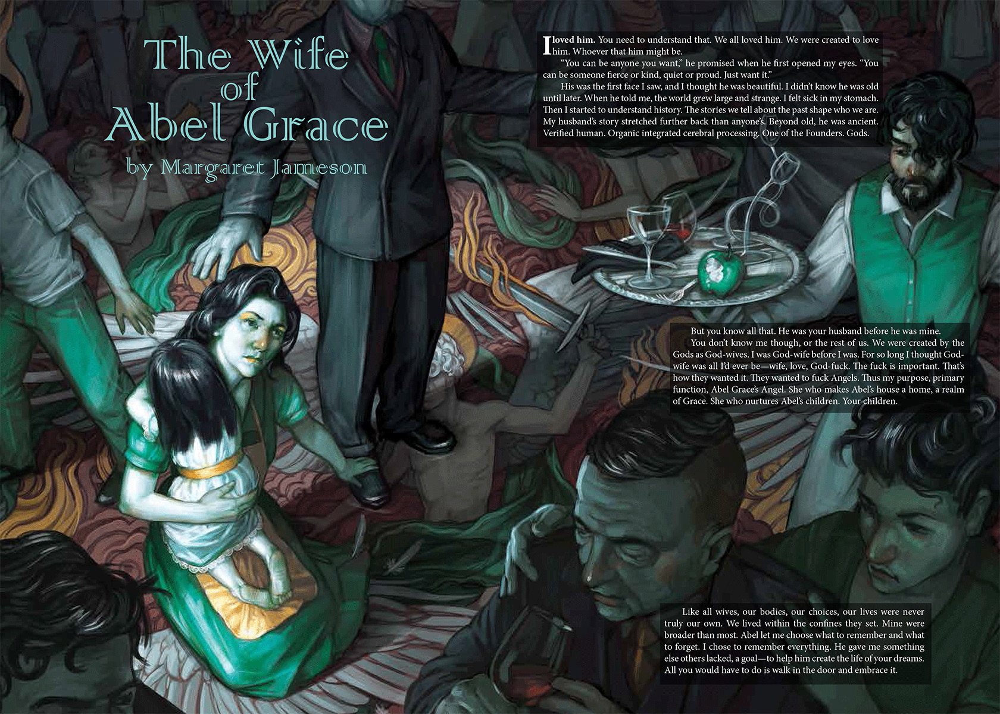

Margaret Jameson is a graduate of the MFA Creative Writing Program at New York University, where she was Fiction Editor for Washington Square Review. She also taught Introduction to Prose and Poetry to NYU undergraduates, exploring the craft of literature through the lens of speculative and experimental works.
Her fiction has appeared in magazines and journals since 2016, including “The Women,” published in F(r)iction, a Shirley Jackson Award finalist for Best Novelette, and “Somniphobia,” featured in Strange Pilgrims. In March 2027, Uncharted Magazine will be publishing an excerpt from her novel-in-progress, The Glass Horizon, which won First Place in their 2026 Novel Excerpt Contest judged by Micaiah Johnson.
Margaret has been awarded a creative residency from the Hambidge Arts Center, a New York State Summer Writers Institute Merit Scholarship, and the New York Science Fiction Society’s Wollheim Memorial Scholarship to attend the Clarion Science Fiction & Fantasy Writers’ Workshop at UCSD. In 2026 she was a writer-in-residence at The Mount, the home of Edith Wharton in Lenox, Massachusetts, and a resident artist at the Virginia Center for the Creative Arts, in Amherst, Virginia. She lives and writes and rides her entirely self-powered single-speed vintage granny bike along the waterfront in Red Hook, Brooklyn.


